完課後，你會做出什麼？
這不是一堆零散範例，而是一套從登入到 AI 對話完整跑通的企業級 AI CRM。以下是你會親手建立的能力：
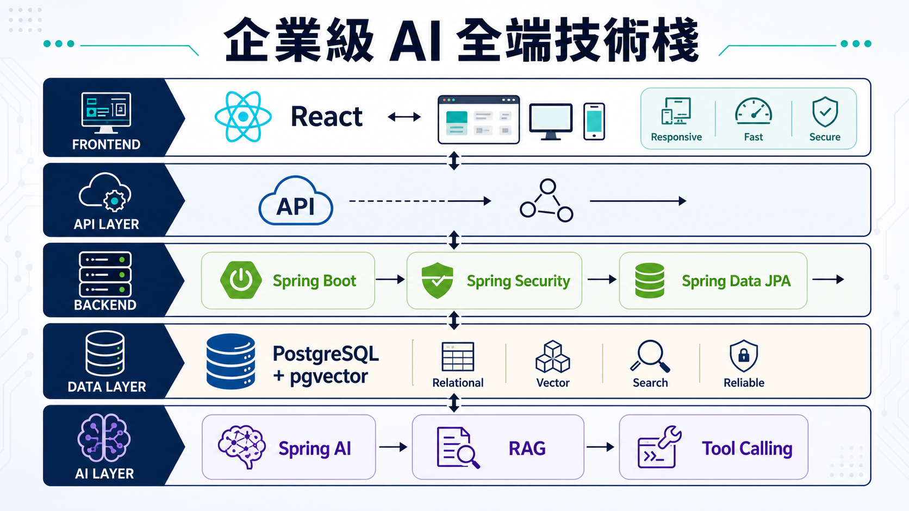
建立 Spring Boot + React 的 AI CRM 專案，前後端分離、可啟動可驗證。
用 Spring MVC 設計客戶、商機、互動紀錄與任務管理 API，分層清楚。
用 Spring Data JPA、Specification 與 Flyway 建立可遷移的資料庫。
用 Spring Security + JWT 完成登入、角色與 API 授權保護。
用 React 19 建立 CRM Dashboard、客戶列表、商機看板與 AI 助理介面。
用 Spring AI ChatClient + SSE 打造 token-by-token 回應的 CRM 助理。
用 tool calling 與 pgvector RAG，讓 AI 引用文件、不憑空亂答。
完成結訓專案整合、效能調校與 Demo Day 展示驗收，產出可展示的完整作品。
不只教你呼叫 LLM，而是讓 AI 真正上線
不是把多門課拼在一起，而是用同一套 AI CRM 範例，把每個技術放進同一條開發路線。
所有金額、訂單、權限由 Java domain service 提供；LLM 只負責摘要、分類、建議與草稿。
每單元都附 AI 提示詞主題：先讀需求、再產程式、最後驗證，產出可測試可維運的程式碼。
每一章的產出都成為下一章的基礎，避免只學到零散範例。
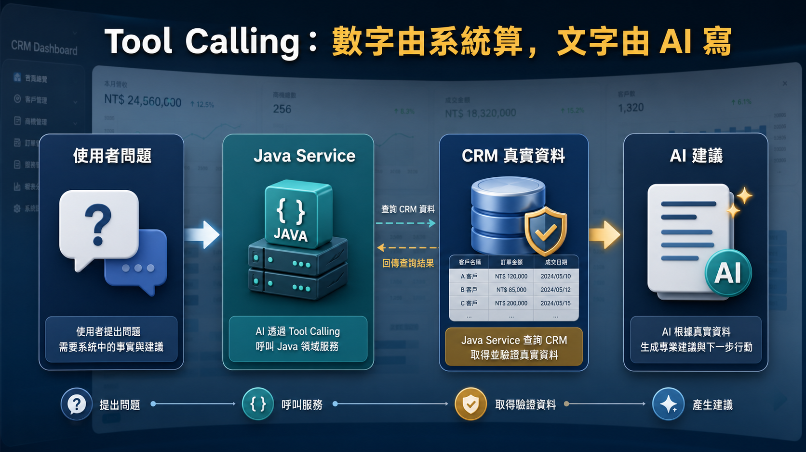
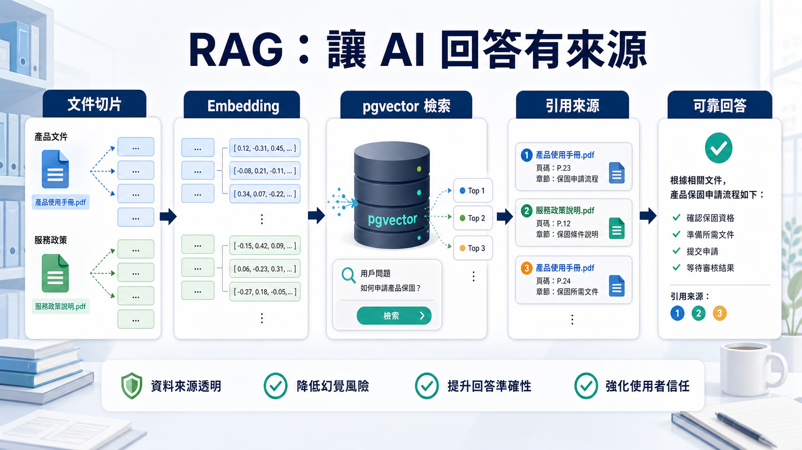
數字會說話：AI 工程師的市場優勢
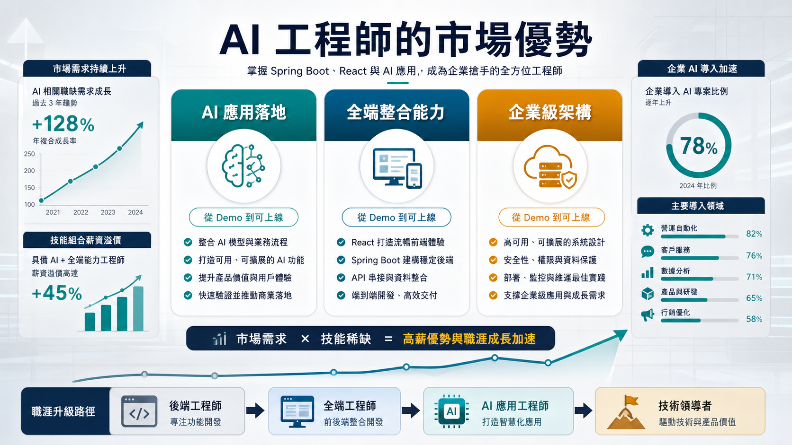
學完這門課，對你的職涯有什麼幫助？
AI 不只是技術趨勢，更是薪資與職涯成長的加速器。以下是這門課為你帶來的具體競爭優勢：
不管你現在站在哪裡，這門課帶你往前一步
無論你是想升級技能、轉職、推動公司 AI 轉型，還是用作品集求職——這門課都能給你具體成果。
已有 Java 或 Spring Boot 經驗，想快速掌握 AI 整合能力，在團隊中成為 AI 落地的推手。
具備程式基礎，想轉型為能同時處理前後端與 AI 的全端工程師，用完整作品集敲開面試大門。
公司計畫導入 AI，你需要一套可落地的技術方案，而不只是 ChatGPT API 的 Hello World。
即將畢業或剛畢業，用企業級專案作品在履歷中脫穎而出，展現不只是寫得動而是寫得好的能力。
這門課為誰而設計
一套 B2B AI CRM 智慧業務助理
從基本 CRM 功能開始，逐步加入 AI 能力。AI 不替代決策，而是提供可追蹤的建議——金額與權限由 Java 算，摘要與草稿由模型寫。
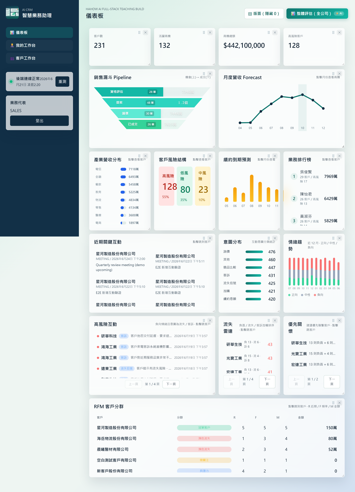
包含登入後的報表總覽、客戶列表、AI 助理、Agent Trace 與可下鑽的 CRM 圖表，不是靜態 mockup。
報表、互動與 AI 建議，都能拆開當作品集素材
Landing page 直接放入最新截圖，讓訪客一眼看到完課後會產出的產品畫面與 Hahow 提案用視覺素材。
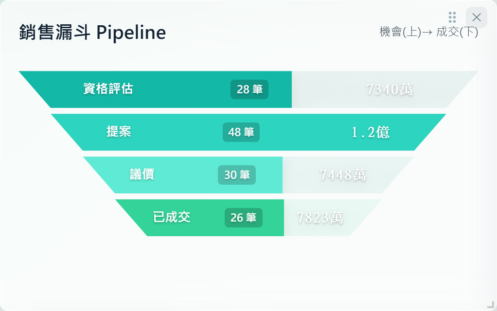
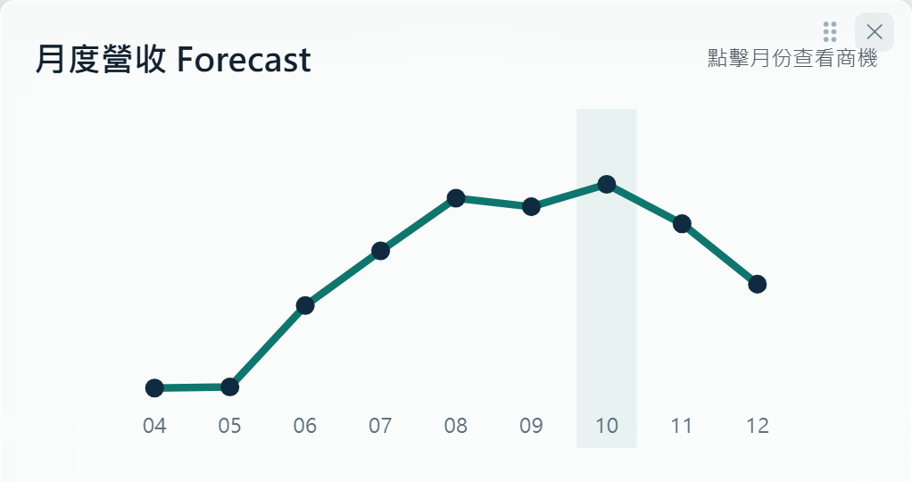
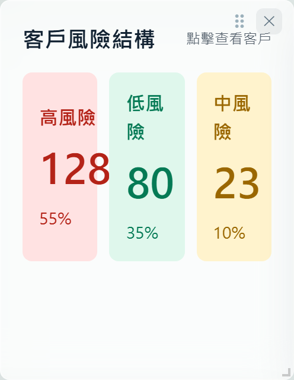
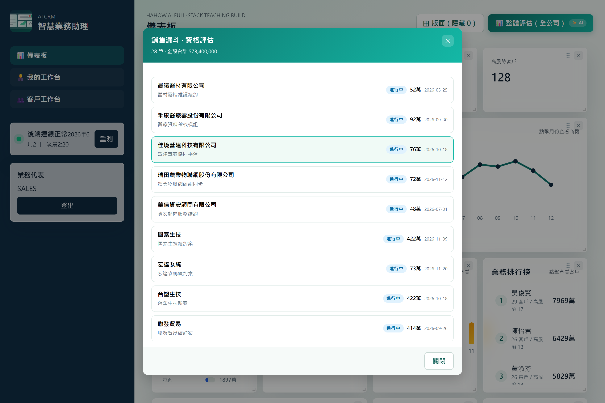
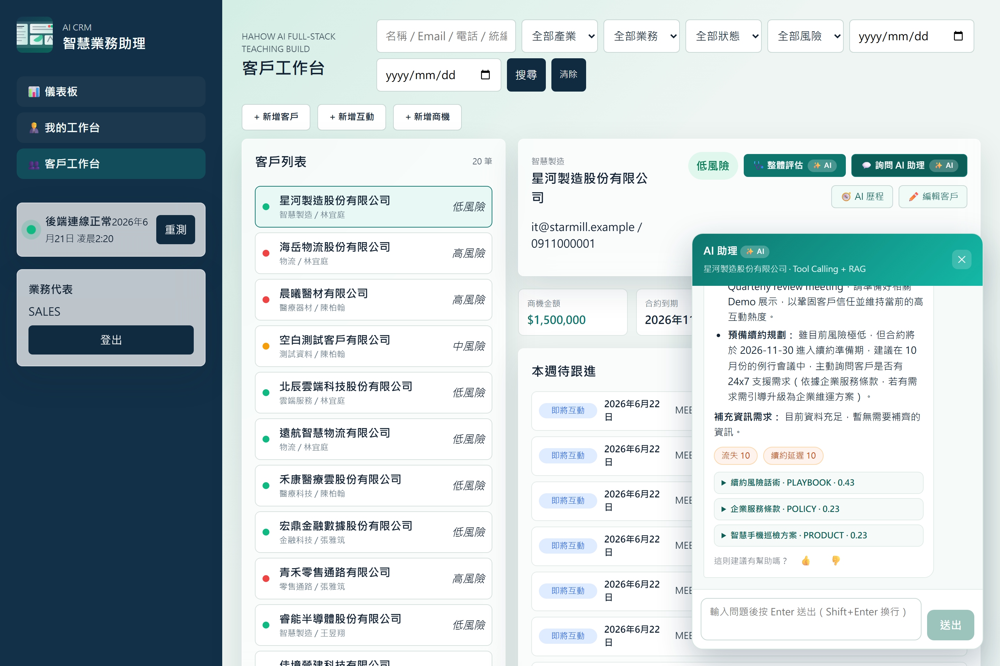
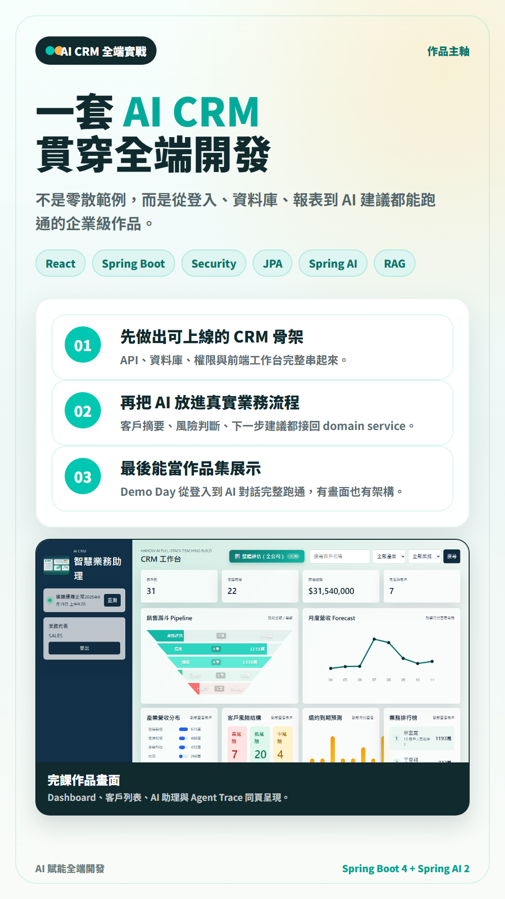
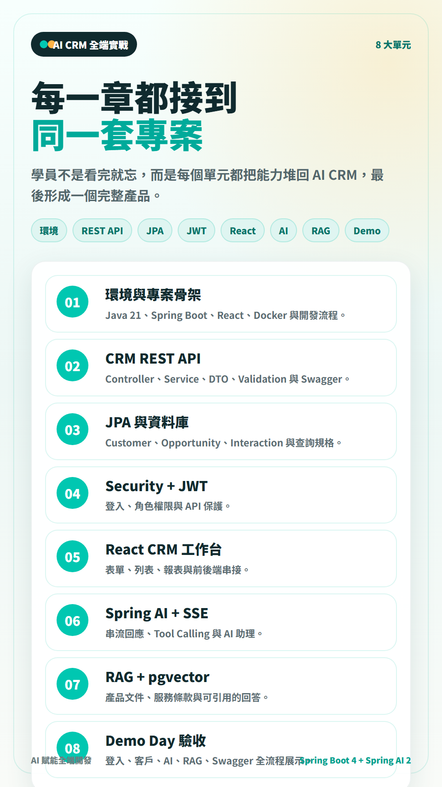
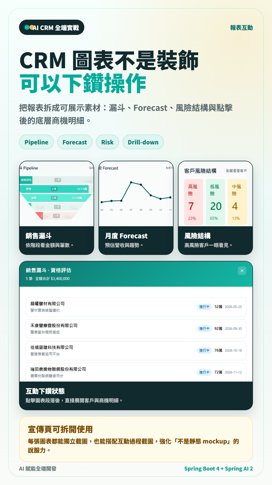
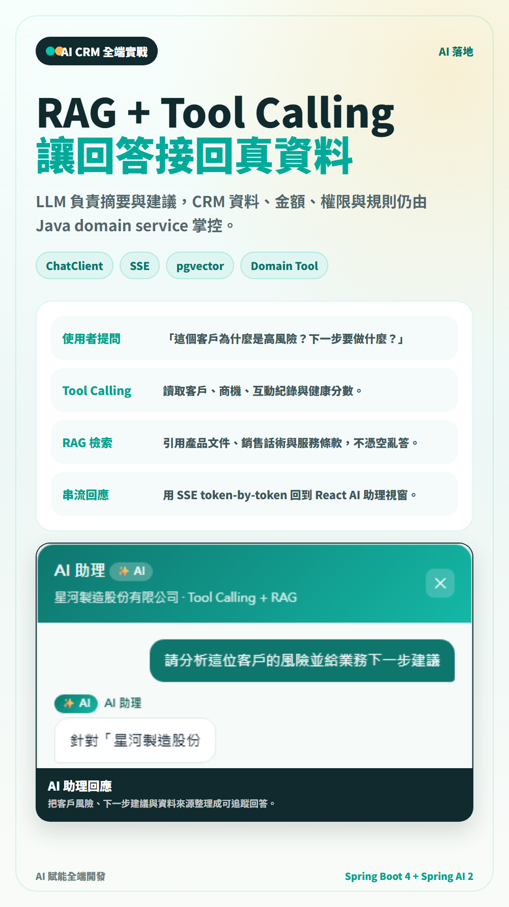
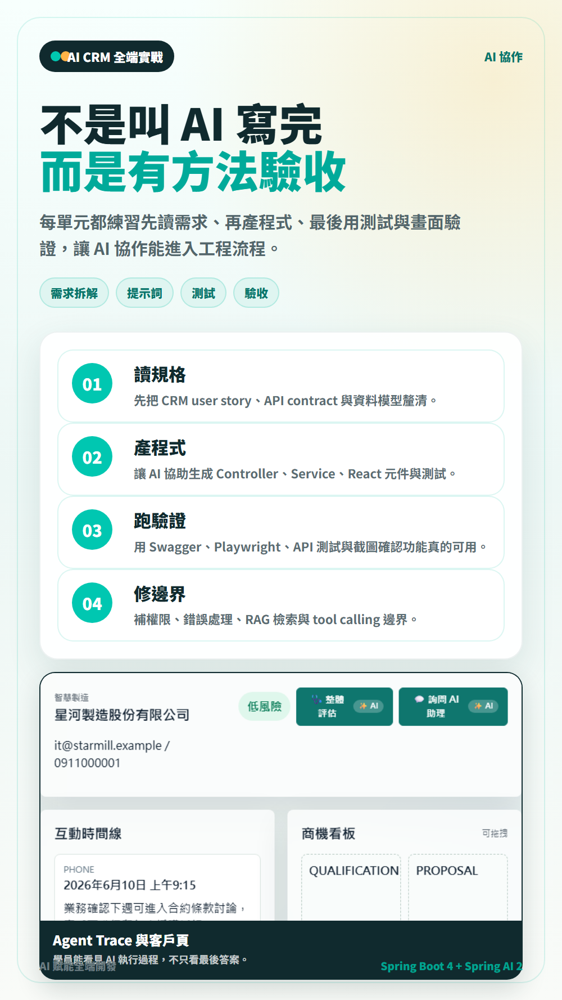
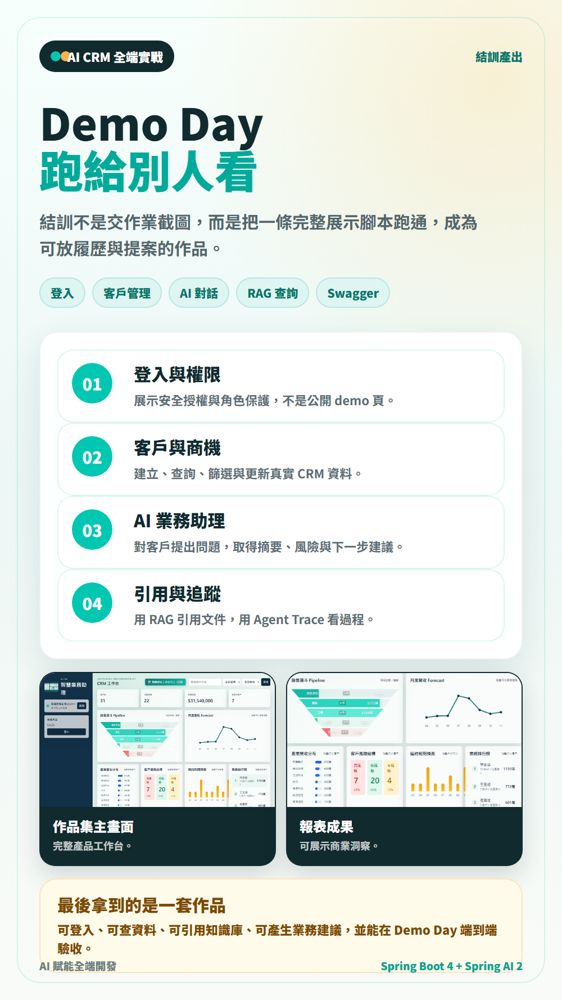
8 大單元，章章相連
每個單元都有明確產出，且全部接到同一套 AI CRM 專案。可拆成 4 天工作坊或 Hahow 線上章節。
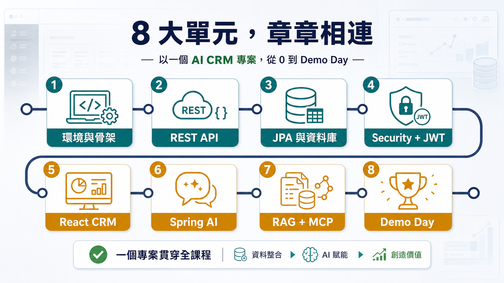
01開發環境、專案骨架與 AI 協作流程
02Spring MVC、REST API 與 CRM Domain Modeling
03PostgreSQL、Flyway、JPA 與動態查詢
04Spring Security、JWT、OpenAPI 與企業級錯誤處理
05React CRM 工作台與前後端整合
06Spring AI ChatClient、SSE 與 tool calling
07RAG、pgvector、MCP 與知識庫擴充
08結訓專案衝刺與 Demo Day 驗收
跟市面上其他課程有什麼不同？
不是所有 AI 課程都一樣——這門課帶你從企業級後端、安全授權到 AI 串流整合，一次到位。
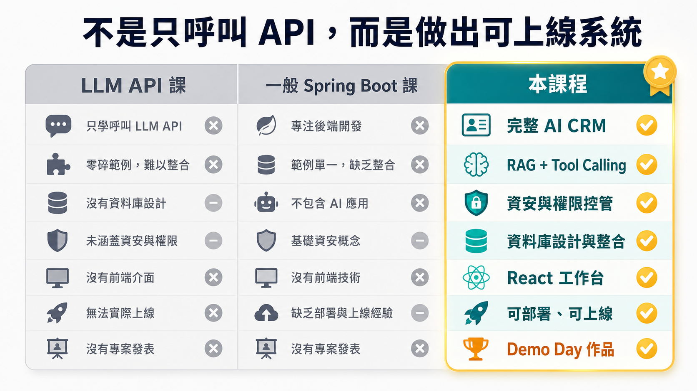
| 比較項目 | 一般 LLM 課程 | 一般 Spring Boot 課程 | 本課程 |
|---|---|---|---|
| 專案完整度 | 只有聊天機器人 Demo | 零散範例、無全端整合 | ✓ 完整 AI CRM，從登入到 AI 對話 |
| AI 整合深度 | 呼叫 API、看回應 | 不涉及 AI | ✓ Tool Calling + RAG + SSE 串流 |
| 企業級實踐 | 無安全、無權限 | 有基本權限 | ✓ JWT + 角色 + ProblemDetail 錯誤處理 |
| 前端整合 | 無前端或極簡 UI | 無前端 | ✓ React 19 完整 CRM 工作台 |
| AI 協作開發 | 無 | 無 | ✓ 每單元附 AI Agent 提示詞 |
| 結訓產出 | 無完整作品 | 零散練習 | ✓ 可展示的 Demo Day 作品集 |
學員怎麼說凱文大叔的教學
以下評價來自凱文大叔在 AmazingTalker 一對一程式設計教學的真實學員回饋。截至目前累積 96 則評價、滿意度 100%（全數五星），原汁原味呈現。
「今天體驗了 Java 程式語言課程，透過老師深入淺出的教學使初學者可以快速進入 Java 的世界。老師在業界非常資深並且教學沉穩、說明解析淺顯易懂，即使是第一次踏入程式設計領域的學生也能夠輕鬆上手，非常值得推薦給想要進修程式語言的學生！」
「上課講解得很清楚。今天原本根本不知道 API 是幹嘛的，到現在能使用 API 來擷取 server 內的內容並且使用在程式裡，在一堂課內教完。真的很讚！」
「A great teacher！我希望所有有需要的學生都能從這裡學到老師的經驗與技術，老師真的很熱情在分享！」
「很謝謝 Kevin 老師很詳細地跟我講解 error handling 跟 exception 的部分，收穫很多。」
「老師非常用心，還有自製教材，超級棒的老師！」
「很有經驗的業師，可以加強我工作上的 Java 技能，等我學會後可以回公司電老鳥了。」
「老師給了很多實用的建議！講的內容也非常完整，了解到很多新知識！」
「老師上課教學認真，且口條清楚，能給予正確的學習方向，並且安排規劃課程。期待接下來的課程內容！」
「老師非常專業，給了很多實際且有用的建議。」
「老師會依需求建議學習方向，也會提供詳細的課程教材內容。」
「老師針對 JAVA 後端給予了很多建議，也介紹了框架！」
「老師是業界講師，非常有經驗，非常值得推薦。」